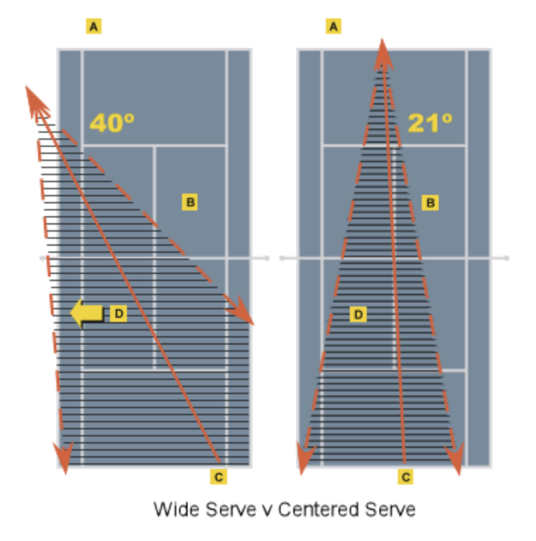

The server should aim down the T and quickly approach the net to avoid being caught in no man's land. Both the server and his/her partner now gain a more offensive position at the net, and they should be looking to attack the net player on the opposite side when possible. The following image shows why serving down the T can be more advantageous than serving out wide; serving down the T helps to prevent opening up the court for the opponent to hit a more difficult return.
The serving team lines up in the center of the court. Prior to serving, the player at the net signals to his/her partner the direction that he/she will move when the point begins. This is an excellent way to keep one's opponents guessing by creating some indecision in their return game.
| Beginner Tips | Intermediate Tips | Advanced Tips |
|---|---|---|
| Server: Try to make your first serve inside the service box. | Server: Aim your first serve toward your opponent's body or down the T. | Server: Serve a kick serve down the T to avoid giving your opponent an angle to pass the net player. |
| Net Player: Protect the side of the court where you signaled you would go. | Net Player: Move to the side of the court you signaled and look for an opportunity to volley. | Net Player: Move to where you signaled and try to poach the return to take your opponent by surprise. |
Click here to read more about these strategies:
The Tennis Server Tennis View Magazine